Gérer l'inventaire de l'atelier,
préparer et charger le matériel de chantier.
Version du 16 août 2026 · Ce guide décrit toutes les fonctions de l'application.
Aucune connaissance préalable n'est nécessaire.
Ce que vous trouverez dans ce guide
1
Découvrir l'applicationÀ quoi elle sert, comment l'ouvrir, choisir son équipe
2
L'accueilVoir l'essentiel d'un coup d'œil
3
Les piècesChercher, consulter, ajuster un stock
4
Ajouter ou modifier une piècePhoto, notice, seuil d'alerte
5
Les famillesClasser le matériel par type
6
Le plan de l'atelierPlacer les zones de rangement
7
Préparer un chantierConstituer la liste du matériel à emporter
8
Organiser par pylône et par portéeRegrouper le matériel ouvrage par ouvrage
9
Chaînes isolantes et câblesLaisser l'application composer le matériel
10
Le total à chargerCe qu'il faut sortir du magasin, tout compris
11
Charger le matérielPointer ce qui part réellement
12
Imprimer le bon de chargementSur papier ou en PDF
13
Scanner un QR codeRetrouver une pièce instantanément
14
Sur le téléphoneInstaller l'application, travailler sans réseau
15
Questions fréquentesLes situations courantes
Trois choses à savoir avant de commencer
Tout est partagé, en direct
Ce que vous modifiez apparaît immédiatement sur les téléphones et ordinateurs de vos collègues.
Il n'y a rien à enregistrer ni à envoyer : c'est automatique.
Chaque équipe a son propre stock
EL Feytiat et EL Aurillac ne partagent rien : ni pièces, ni familles, ni plan, ni chantiers.
Vérifiez toujours le nom affiché en haut à droite avant de travailler.
Rien n'est jamais perdu
Les suppressions demandent toujours une confirmation, et le stock retiré pour un chantier
est automatiquement remis si le chantier est supprimé.
1. Découvrir l'application
Invent'RTE sert à deux choses : savoir ce que contient l'atelier et
préparer le matériel qui part en chantier.
Ouvrir l'application
Il n'y a rien à installer. Ouvrez simplement cette adresse dans votre navigateur :
niamort36-prog.github.io/Inventaire-RTE
Elle fonctionne sur ordinateur, sur tablette et sur téléphone. Aucun mot de passe
n'est demandé : l'application vous connecte toute seule.
Les six onglets
Accueil
Les chiffres clés, les chantiers en cours et les alertes de stock bas.
Pièces
Tout le matériel de l'atelier. C'est ici qu'on ajoute et qu'on modifie.
Familles
Les catégories qui servent à classer le matériel.
Plan
Le plan de l'atelier avec les zones de rangement.
Paniers
Les chantiers : le matériel à emporter.
Scan
Le lecteur de QR codes.
Choisir son équipe
Le bouton en haut à droite indique l'équipe sur laquelle vous travaillez. Cliquez dessus
pour en changer ou pour saisir votre nom.
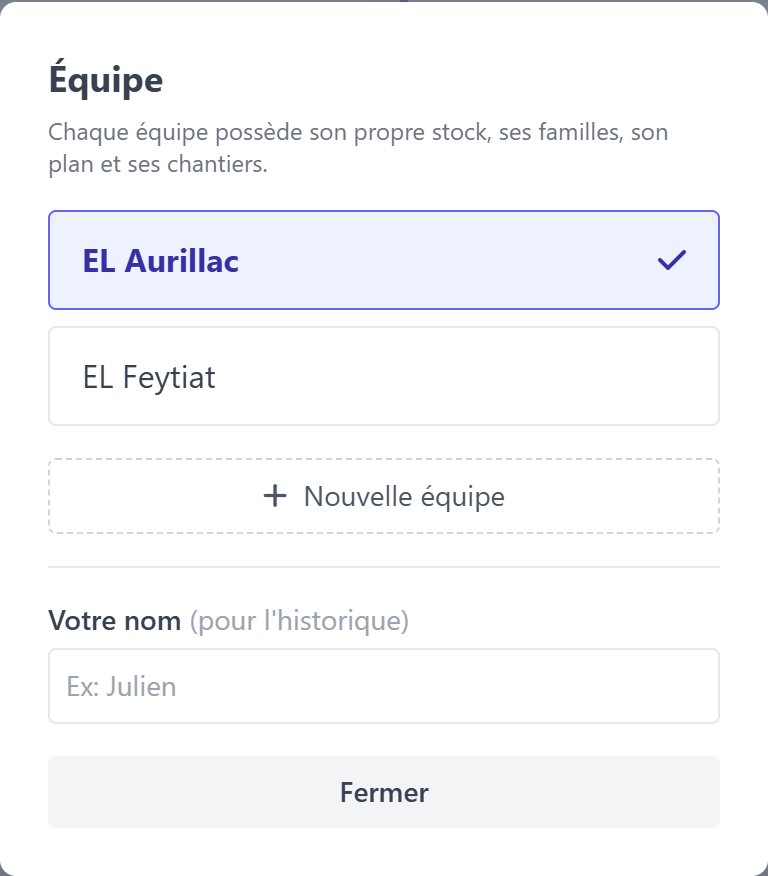
Le choix de l'équipe, et le nom qui apparaîtra dans l'historique
Saisissez votre nom
Il n'est demandé qu'une fois et sert à l'historique : on sait ainsi qui a sorti quel matériel.
Ce n'est pas un compte, il n'y a pas de mot de passe.
Le point de couleur à gauche du nom d'équipe
Vert : tout est synchronisé. Rouge : vous êtes hors réseau — vous pouvez continuer à consulter,
mais les modifications ne partiront qu'au retour de la connexion.
2. L'accueil
C'est la page qui s'ouvre en premier. Elle répond à trois questions :
qu'est-ce qu'on a, qu'est-ce qui part en chantier, et qu'est-ce qui manque.
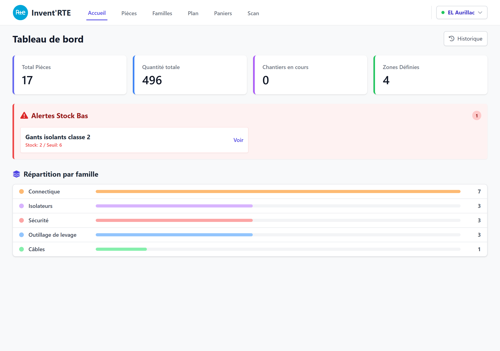
Le tableau de bord : compteurs, chantiers en cours et alertes
Total Pièces
Le nombre de références différentes.
Quantité totale
Le nombre d'articles en tout, toutes références confondues.
Chantiers en cours
Les chantiers validés, en cours de chargement.
Zones Définies
Le nombre d'emplacements de rangement sur le plan.
Les alertes de stock bas
Le cadre rouge liste les pièces dont la quantité est descendue au niveau du seuil
que vous avez fixé, ou en dessous. Cliquez sur une ligne pour ouvrir directement la fiche
de la pièce concernée.
Le bouton Historique
En haut à droite, il retrace les derniers mouvements : ajouts, retraits, modifications de stock,
avec la date et le nom de la personne. Utile pour comprendre pourquoi une quantité a changé.
3. Les pièces
L'onglet Pièces affiche tout le matériel sous forme de fiches.
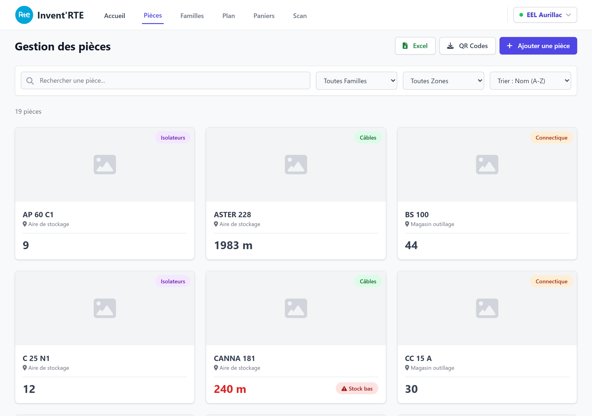
La liste des pièces, avec la recherche, les filtres et le tri
Retrouver une pièce
La recherche cherche dans le nom, la zone et la description.
Les filtres limitent l'affichage à une famille ou à une zone.
Le tri propose notamment « Stock bas d'abord », pratique pour préparer une commande.
Une pièce dont le stock est au niveau du seuil s'affiche en rouge avec la mention
Stock bas.
La fiche d'une pièce
Cliquez sur une fiche pour l'ouvrir.
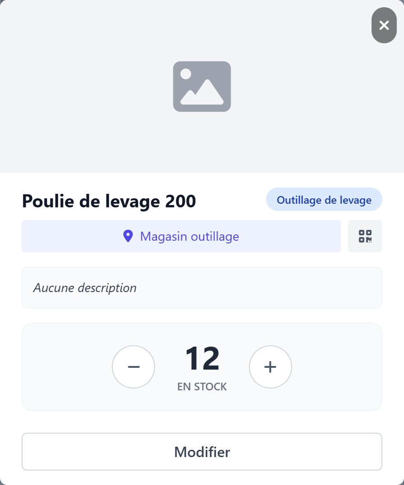
La fiche : photo, zone, famille et réglage rapide du stock
1
Les boutons – et + ajustent le stock immédiatement. C'est le geste à faire quand on prend ou rend du matériel hors chantier.
2
Le bouton Zone ouvre le plan et fait clignoter l'emplacement de rangement.
3
L'icône QR code affiche le code à imprimer et à coller sur le bac.
4
Modifier ouvre la fiche complète ; Notice apparaît si un PDF a été joint.
Deux personnes peuvent modifier en même temps
Si un collègue ajuste le stock de la même pièce au même moment, les deux corrections
s'additionnent : aucune ne remplace l'autre.
4. Ajouter ou modifier une pièce
Depuis l'onglet Pièces, bouton Ajouter une pièce.
Pour modifier une pièce existante, ouvrez sa fiche puis Modifier.
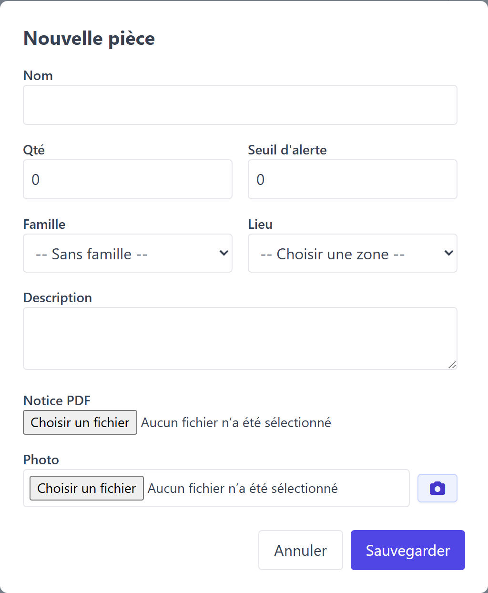
Le formulaire d'une pièce
Nom
Obligatoire. C'est ce qui apparaît partout et sur quoi porte la recherche.
Qté
La quantité réellement présente à l'atelier.
Seuil d'alerte
En dessous ou à ce niveau, la pièce remonte dans les alertes de l'accueil. Laissez 0 si vous ne voulez pas d'alerte.
Famille
Facultatif, mais très utile pour trier ensuite.
Lieu
La zone de rangement, choisie parmi celles du plan.
Notice PDF
Facultatif, 5 Mo maximum. Consultable depuis la fiche.
Photo
Facultatif. L'icône appareil photo permet de la prendre directement avec le téléphone.
Les photos sont compressées automatiquement
Inutile de les réduire avant : l'application s'en charge, pour que l'application reste rapide
même en 4G sur un chantier.
Supprimer une pièce
Le bouton rouge Supprimer la retire définitivement, avec sa photo et sa notice.
Elle est aussi retirée des chantiers où elle figurait. Cette action ne peut pas être annulée.
5. Les familles
Une famille regroupe le matériel de même nature : câbles, isolateurs, outillage de levage…
Elles servent à filtrer les listes et à structurer le bon de chargement.
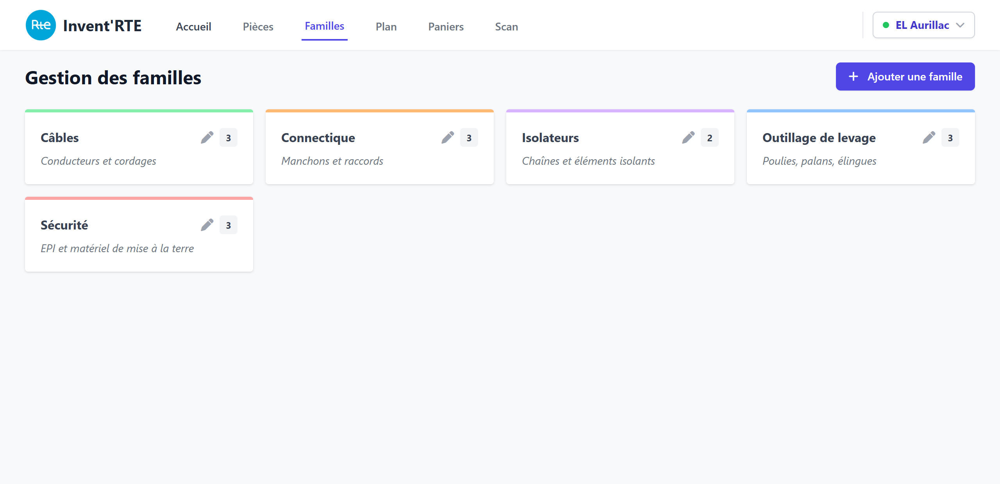
Chaque famille a une couleur et affiche le nombre de pièces qu'elle contient
1
Bouton Ajouter une famille : un nom, une description facultative, une couleur.
2
Cliquez sur une famille pour voir la liste des pièces qu'elle contient.
3
Le crayon en haut à droite de la carte permet de la modifier.
Supprimer une famille ne supprime pas les pièces
Elles restent dans l'inventaire, simplement sans famille. Vous pourrez les reclasser ensuite.
6. Le plan de l'atelier
Le plan sert à savoir où se range chaque pièce. On y place des zones,
et chaque pièce est rattachée à une zone.
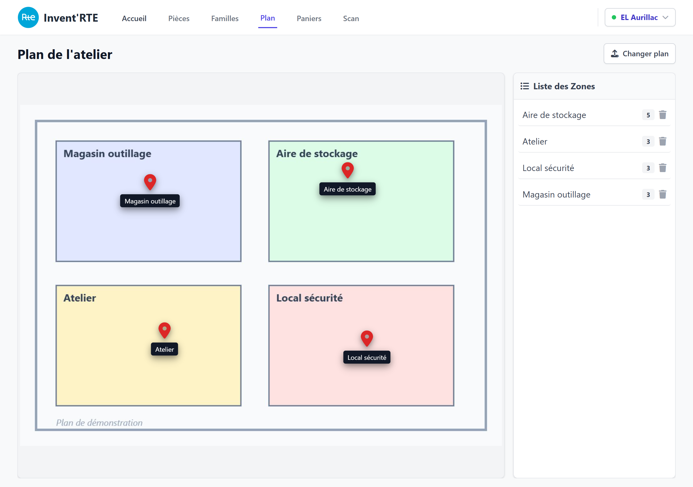
Les zones posées sur le plan, et leur liste à droite avec le nombre de pièces
1
Changer plan (en haut à droite) charge une photo ou un schéma de l'atelier.
2
Cliquez sur le plan à l'endroit voulu pour créer une zone : donnez-lui un nom et une description.
3
Faites glisser un repère pour le déplacer. Un appui bref l'ouvre au lieu de le déplacer.
4
Cliquez sur une zone (sur le plan ou dans la liste) pour voir tout ce qu'elle contient, classé par famille.
Renommer une zone met tout à jour
Si vous changez le nom d'une zone, toutes les pièces qui s'y trouvent suivent automatiquement.
Supprimer une zone ne supprime pas les pièces
Elles restent dans l'inventaire, sans zone, et vous pourrez leur en attribuer une autre.
7. Préparer un chantier
Un chantier (ou « panier ») est la liste du matériel à emporter. Il se déroule en deux temps :
d'abord la préparation, ensuite le chargement.
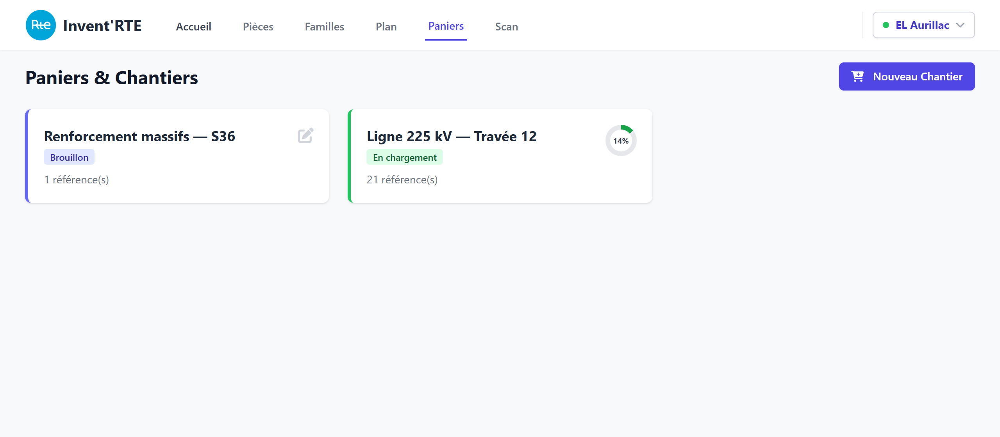
La liste des chantiers. Le camembert indique l'avancement du chargement
Créer le chantier
1
Onglet Paniers, puis Nouveau Chantier.
2
Donnez-lui un nom parlant : ligne, travée, semaine… Vous pourrez le renommer en cliquant sur son titre.
3
Indiquez le domaine de tension. Il sert à ne proposer, plus tard, que les chaînes isolantes et les câbles du domaine concerné.
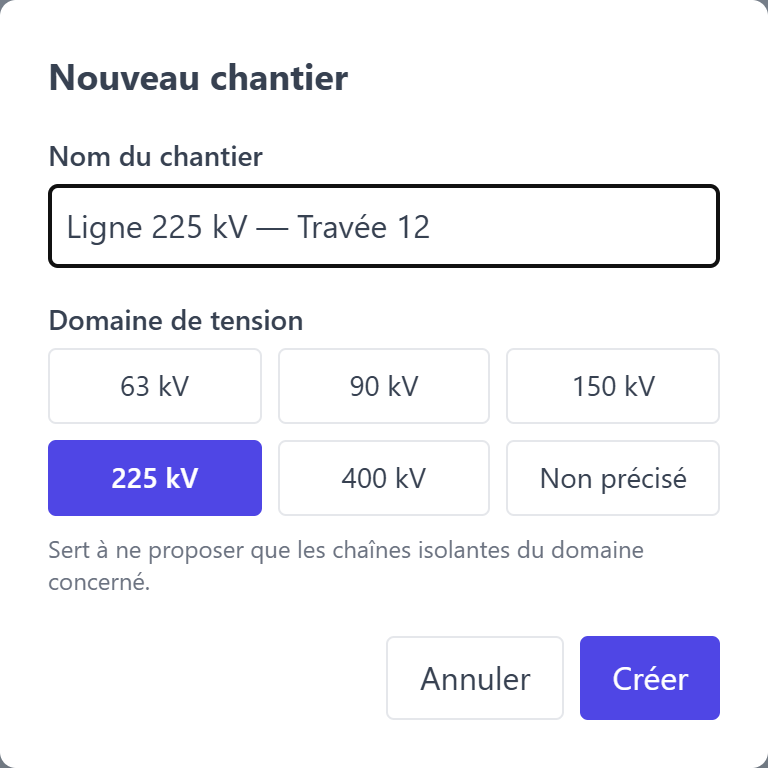
Le nom et le domaine de tension du chantier
Si vous ne savez pas encore
Choisissez « Non précisé ». Le chantier fonctionne normalement ; seules les
propositions de chaînes isolantes ne seront pas disponibles.
Ajouter du matériel
Utilisez la barre de recherche en haut de la fenêtre du chantier.
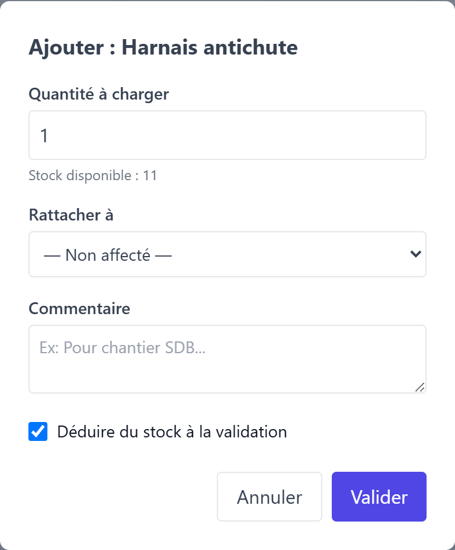
La fenêtre d'ajout de matériel
Quantité à charger
Le nombre d'articles à emporter.
Rattacher à
Le pylône ou la portée concerné — voir le chapitre suivant. N'apparaît que si vous en avez créé.
Commentaire
Une précision libre, qui apparaîtra sur le bon imprimé.
Déduire du stock
Coché, la quantité sera retirée de l'inventaire à la validation. Décochez pour du matériel qui revient toujours.
Tant que le chantier est en « Brouillon », le stock n'est pas touché
Vous pouvez préparer, corriger, retirer des lignes sans conséquence sur l'inventaire.
8. Organiser par pylône et par portée
Sur un chantier de ligne, on peut regrouper le matériel ouvrage par ouvrage :
un pylône, une portée. C'est facultatif — sans cela, le chantier reste une simple liste.
Déclarer un ouvrage
Dans le chantier, bouton Pylône / Portée.
Pylône
Numéro, fonction (ancrage ou alignement), chaîne (simple, double ou triple) et faisceau (simple ou double).
Portée
Numéro et faisceau seulement. Les champs fonction et chaîne disparaissent, ils n'ont pas lieu d'être.
Deux champs facultatifs suivent — le câble et la chaîne isolante —
qui permettent de laisser l'application composer le matériel. Ils font l'objet du chapitre suivant.
Y rattacher le matériel
L'ouvrage que vous venez de créer devient celui auquel les ajouts se rattachent : déclarez le
pylône 1, ajoutez son outillage, puis passez au suivant. Rien à resélectionner à chaque fois.
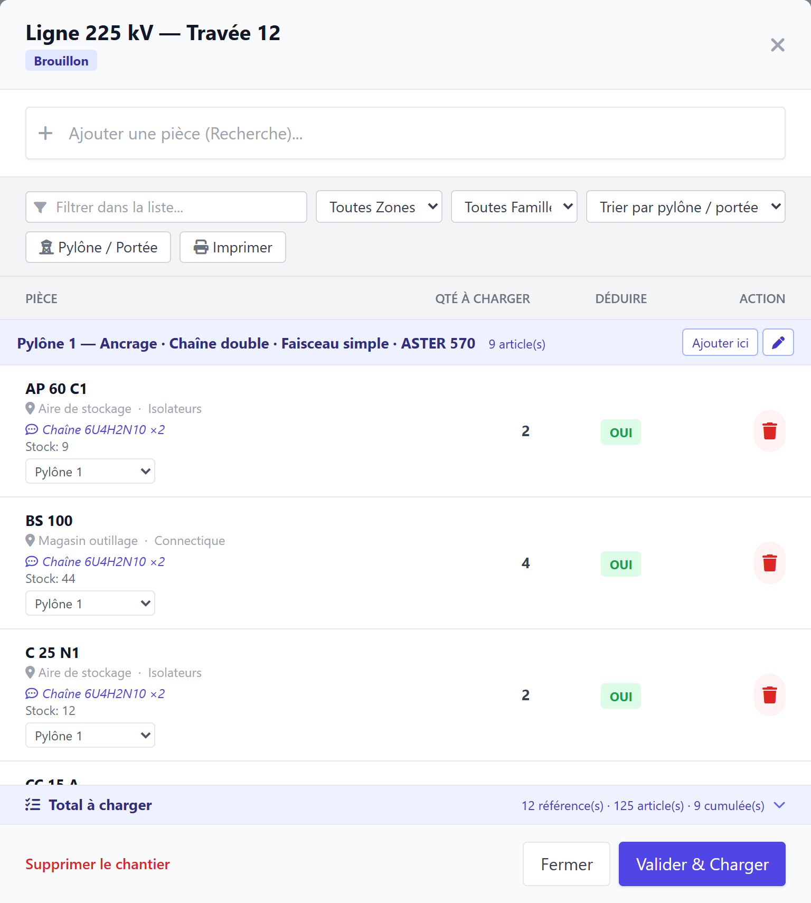
Le matériel regroupé sous chaque ouvrage, avec ses caractéristiques rappelées
1
Ajouter ici sur un bandeau : revenir sur un ouvrage précédent pour compléter.
2
Le crayon : corriger les caractéristiques de l'ouvrage.
3
Le menu sous chaque article : le déplacer vers un autre ouvrage.
Le matériel commun reste sous « Non affecté »
Tout ce qui ne dépend pas d'un ouvrage précis y figure : il n'est jamais masqué ni oublié.
Supprimer un ouvrage ne supprime pas son matériel
Les articles rattachés basculent simplement en « Non affecté ».
9. Chaînes isolantes et câbles
En déclarant un pylône, l'application peut composer elle-même le matériel à partir du
catalogue RTE des matériels d'équipement de lignes aériennes. C'est facultatif :
un ouvrage se déclare très bien sans.
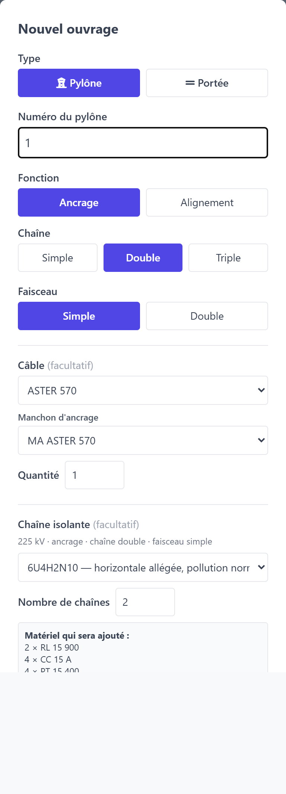
Un pylône d'ancrage 225 kV, avec son câble et sa chaîne isolante
Le câble
Choisissez le câble porté par l'ouvrage. Seuls ceux du domaine de tension du chantier sont
proposés, conducteurs de phase et câbles de garde séparés. L'application en déduit le matériel
d'accrochage :
Pylône d'ancrage
le manchon d'ancrage du câble.
Pylône d'alignement Portée
les pinces de suspension compatibles. S'il en existe plusieurs, choisissez celle que vous utilisez.
La quantité proposée suit le faisceau — 2 pour un faisceau double — et reste modifiable.
La chaîne isolante
La liste ne contient que les chaînes qui correspondent réellement à ce que vous venez de saisir :
la tension du chantier, l'ancrage ou la suspension, le nombre de files et le faisceau. Les chaînes
en verre et les chaînes à isolateurs composites sont présentées séparément.
Indiquez le nombre de chaînes : l'aperçu affiche aussitôt le matériel qui sera
ajouté, quantités multipliées.
Ce qui est ajouté
Tout le matériel composant la chaîne — rotules, cornes, isolateurs, ferrures — rattaché à
l'ouvrage, avec la mention de la chaîne d'origine dans la colonne des observations.
Les références absentes sont créées à zéro
Si une référence du catalogue n'existe pas encore dans l'inventaire, elle est créée
automatiquement avec une quantité de 0. La liste s'affiche à l'écran :
complétez ces quantités depuis l'onglet Pièces, sinon elles apparaîtront en stock insuffisant.
Les noms sont rapprochés automatiquement
Le catalogue écrit « BS 100 », l'atelier « BS100 » ; « PM 30 400 » contre « PM 30/400 ».
Les espaces et séparateurs sont ignorés lors du rapprochement, donc votre matériel existant
est bien reconnu.
Deux points à vérifier
Le manchon est proposé sous sa désignation de base (MA suivi du câble) : les
variantes allongée, réduite ou étagée dépendent du cas d'emploi. Et le domaine 150 kV
ne propose aucune chaîne — le catalogue n'en contient pas.
10. Le total à charger
Un chantier réparti sur plusieurs pylônes répète les mêmes références d'un ouvrage à l'autre.
La liste détaillée dit où va chaque pièce ; elle ne dit pas combien en sortir
du magasin. C'est le rôle du bandeau Total à charger, en bas du chantier.
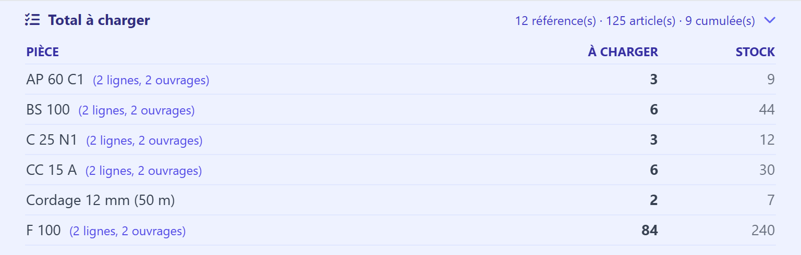
Les lignes cumulées par pièce, avec le stock disponible en regard
Cliquez sur le bandeau pour le déplier. Chaque ligne indique :
la quantité totale à sortir, tous ouvrages confondus ;
le nombre de lignes et d'ouvrages cumulés — « 2 lignes, 2 ouvrages » ;
le stock disponible, suivi d'un ⚠ s'il ne suffit pas.
À regarder avant de partir
Les ⚠ signalent ce qui va manquer. Mieux vaut le voir au magasin qu'au pied du pylône.
Ce récapitulatif figure aussi en fin de bon imprimé, avec une case à cocher par ligne :
le détail par ouvrage sert sur le chantier, le total sert à préparer le chargement.
11. Charger le matériel
Quand la liste est prête, bouton Valider & Charger. Le chantier passe en
Chargement et les quantités marquées « Déduire » sont retirées de l'inventaire.
Un contrôle avant validation
Si une quantité demandée dépasse le stock disponible, l'application affiche la liste des pièces
concernées et demande confirmation. Vous pouvez continuer malgré tout — le stock passera alors en négatif,
ce qui reste visible dans les alertes.
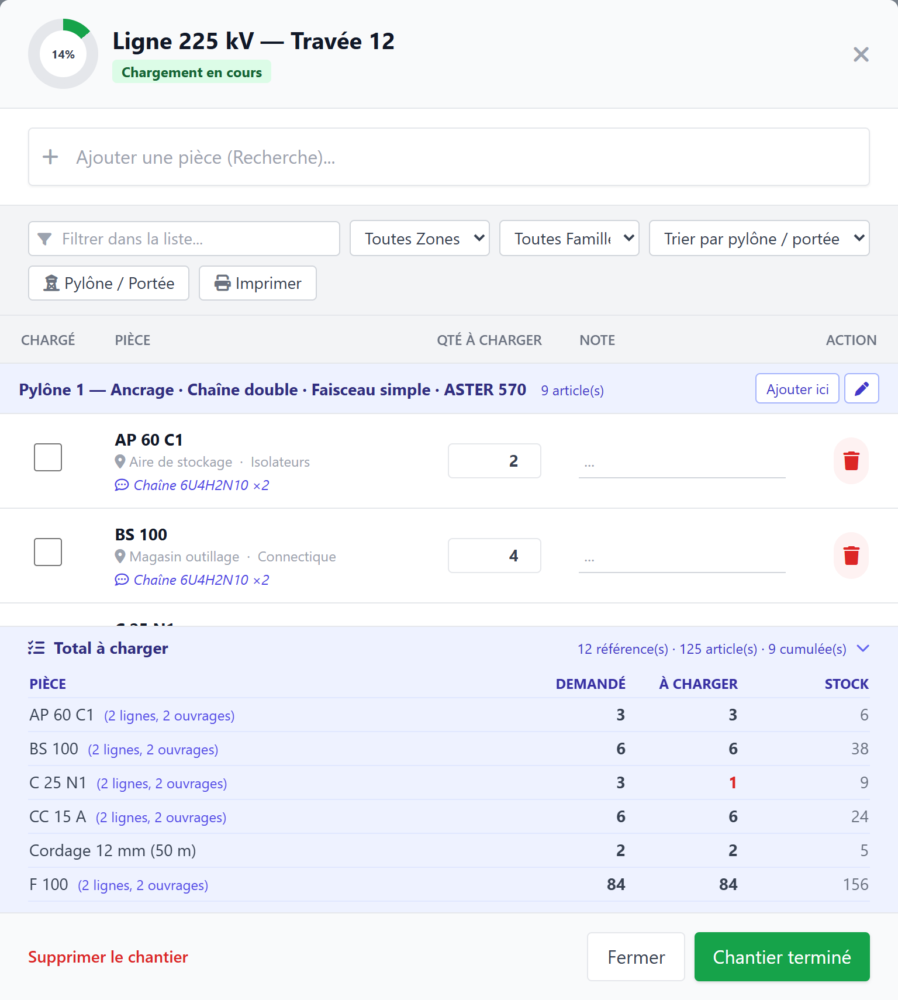
Le mode chargement : on coche au fur et à mesure
Chargé
Cochez quand le matériel est effectivement chargé, dans la quantité indiquée.
Qté à charger
Ce qu'il faut prendre. Corrigez ce nombre si vous ne pouvez pas tout emporter.
Note
Une observation libre : manquant, remplacé, à compléter…
Si vous modifiez la quantité, elle passe en rouge et la mention Demandé au départ
rappelle ce qui était prévu : l'écart reste visible, à l'écran comme sur le papier.
Le pourcentage en haut de la fenêtre et sur la carte du chantier suit l'avancement.
Quand tout est chargé, le bouton Chantier terminé le clôture et le retire de la liste.
Pendant le chargement, le bandeau Total à charger affiche deux colonnes :
ce qui était demandé et ce qui part réellement, l'écart en rouge.
Terminé ou supprimé, ce n'est pas la même choseChantier terminé clôture le chantier : le matériel est parti, le stock reste déduit.
Supprimer le chantier annule l'opération et remet le stock comme avant.
12. Imprimer le bon de chargement
Dans un chantier, bouton Imprimer. Le document reprend exactement
ce que vous avez à l'écran : le tri choisi et les filtres actifs.
Choisir l'ordre avant d'imprimer
Par pylône / portée
Ouvrage par ouvrage. L'ordre naturel sur le terrain.
Par zone
On suit l'atelier zone par zone, sans allers-retours. Idéal pour le chargement.
Par nom
Pour pointer une référence précise.
Par famille
Câbles ensemble, isolateurs ensemble…
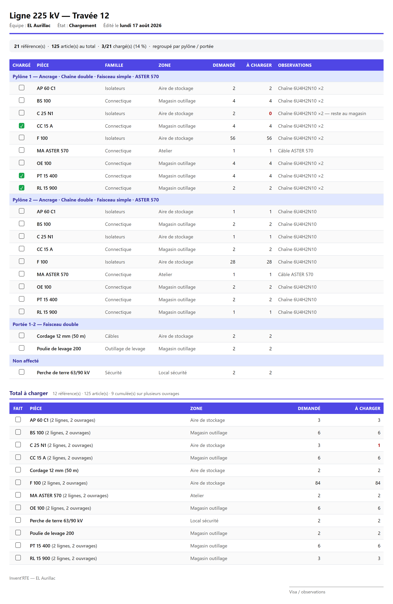
Le bon de chargement, ici regroupé par ouvrage
Le bon comprend une case à cocher par ligne, les quantités demandées et à charger,
les observations et un emplacement pour le visa. Les en-têtes de colonnes se répètent à chaque page.
Pour obtenir un PDF
Cliquez sur Imprimer / Enregistrer en PDF, puis choisissez
« Enregistrer au format PDF » comme destination au lieu d'une imprimante.
Cela fonctionne aussi bien sur ordinateur que sur téléphone.
13. Scanner un QR code
Chaque pièce possède un QR code. Collé sur le bac ou l'étagère, il permet d'ouvrir
sa fiche instantanément, sans la chercher dans la liste.
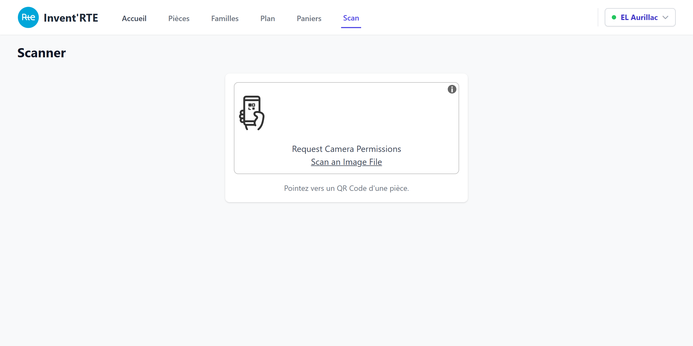
L'onglet Scan. Autorisez l'accès à la caméra à la première utilisation
Imprimer les étiquettes
Onglet Pièces → bouton QR Codes. Une planche d'étiquettes
s'ouvre avec, pour chaque pièce, son nom, son code et sa zone. Il ne reste qu'à imprimer et découper.
Les QR codes sont propres à chaque équipe
Scanner l'étiquette d'une pièce de Feytiat alors qu'on est sur Aurillac affiche un message
d'avertissement : c'est normal, il faut d'abord changer d'équipe.
Exporter l'inventaire vers Excel
Toujours dans l'onglet Pièces, le bouton Excel produit un tableau
complet : nom, quantité, seuil, indicateur de stock bas, famille, zone et description.
Pratique pour un inventaire annuel ou une commande.
14. Sur le téléphone
L'application est prévue pour être utilisée en atelier et en chantier, directement sur le téléphone.
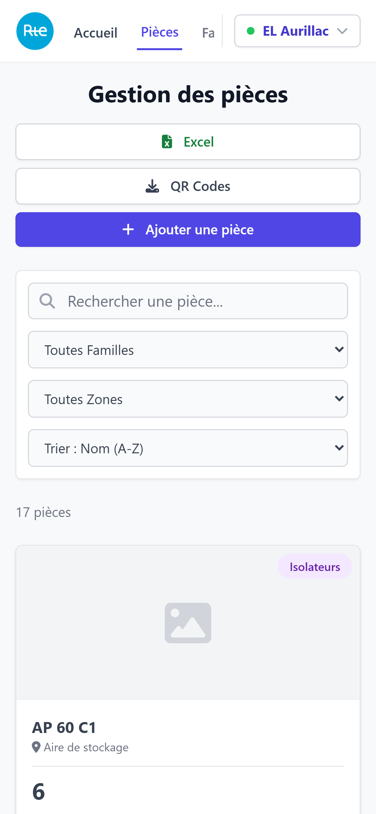
L'affichage s'adapte automatiquement à l'écran
L'installer sur l'écran d'accueil
iPhone (Safari) : bouton Partager, puis « Sur l'écran d'accueil ».
Android (Chrome) : menu ⋮, puis « Ajouter à l'écran d'accueil ».
Elle s'ouvre alors comme une application, sans barre d'adresse.
Elle fonctionne sans réseau
Les dernières données consultées restent disponibles hors connexion : vous pouvez vérifier
une référence ou une quantité au fond d'un local sans couverture.
En revanche, les modifications nécessitent une connexion — le point rouge à côté
du nom de l'équipe vous prévient.
Après une mise à jour de l'application
Fermez complètement l'application et rouvrez-la une fois. Sans cela, l'appareil peut continuer
à utiliser l'ancienne version pendant un moment.
15. Questions fréquentes
Je ne retrouve pas une pièce que je viens d'ajouter.
Vérifiez l'équipe affichée en haut à droite : la pièce a peut-être été créée sur l'autre équipe.
Vérifiez aussi qu'aucun filtre (famille ou zone) n'est actif dans l'onglet Pièces.
Le stock affiché ne correspond pas à ce que j'ai sous les yeux.
Regardez si une partie du matériel est engagée dans un chantier en cours : les quantités
marquées « Déduire » sont retirées dès la validation. L'Historique, depuis l'accueil,
retrace tous les mouvements avec leur auteur.
Une quantité est devenue négative.
C'est possible quand un chantier a été validé alors que le stock était insuffisant.
Corrigez la quantité réelle depuis la fiche de la pièce.
Le point à côté du nom de l'équipe est rouge.
Vous n'avez plus de réseau. La consultation reste possible ; les modifications devront attendre
le retour de la connexion. Aucune donnée n'est perdue entre-temps.
J'ai supprimé un chantier par erreur.
Le stock a été remis automatiquement. En revanche la liste du matériel est perdue :
il faut la reconstituer.
La caméra ne s'active pas pour scanner.
Le navigateur demande l'autorisation d'accès à la caméra la première fois. Si vous avez refusé,
il faut la réautoriser dans les réglages du navigateur pour ce site.
Puis-je ajouter une troisième équipe ?
Oui : bouton de l'équipe en haut à droite, puis Nouvelle équipe.
Elle démarre vide, avec son propre stock, son propre plan et ses propres chantiers.
Est-ce que quelqu'un d'extérieur peut voir notre inventaire ?
Non. La base est fermée : seule l'application y accède, et uniquement depuis l'adresse officielle.
Un doute, un problème ?
L'application enregistre tous les mouvements. Avant de corriger une quantité qui vous semble fausse,
consultez l'Historique depuis l'accueil : il indique qui a fait quoi, et quand.